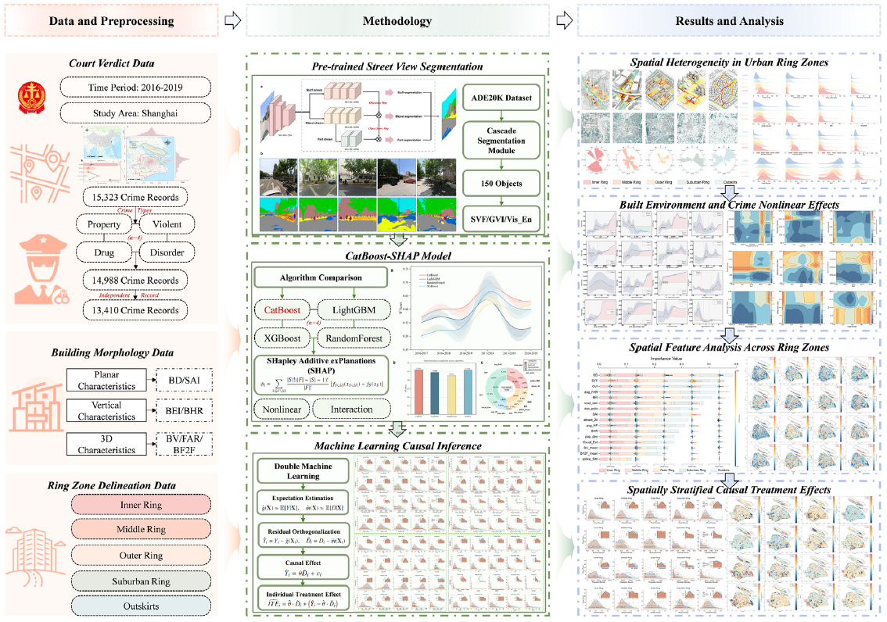

About Me
Hi there, I am Chonghao Zhang (Chinese name: 张翀昊), you can call me "Matthew". I am currently a Ph.D. candidate at the Urban Mobility Institute at Tongji University, under the supervision of Prof. Xiao Luo. I previously minored in Finance at the School of Economics, Fudan University (2021.09 – 2023.10).
Can we predict where a city's people will go, uncover why they choose as they do, and even generate and steer their collective movement? These questions drive my work at the intersection of computational social science and urban mobility. I make human mobility predictable, generative, and controllable: predicting it from satellite, signaling and trajectory data; recovering the latent decision rules behind travel with inverse reinforcement learning; and embedding these rules in self-evolving, role-conditioned generative agents that reproduce and steer collective behavior. With cutting-edge AI — generative agents, IRL and multimodal foundation models — I push travel-behavior modeling from prediction toward active, counterfactual control, in service of low-carbon, healthy and comfortable mobility.
- People — predict → generate → control. I recover the latent reward process behind individual route, mode and timing choices via inverse reinforcement learning ("what kinds of people travel, when, where and why"), then embed these rules in self-evolving, role-conditioned generative agents that reproduce and steer collective mobility — turning mobility from merely predictable into controllable, toward low-carbon, healthy and comfortable travel.
- City → behavior — how the built environment shapes movement. Pairing Google AlphaEarth (AEF) satellite embeddings with origin–destination data, I quantify how the built environment drives travel and activity behavior (with crime and carbon exposure as cases) and encode mobility as a learnable vector — i.e., how re-tuning the city re-shapes movement.
- Convergence — an agent-based “urban sandbox.” I integrate prediction, IRL-recovered rewards and the built-environment representation into one agent-based model for bidirectional, counterfactual policy simulation — my doctoral capstone.
My research aims to understand the generative mechanisms and spatiotemporal propagation dynamics of urban and social events, thereby gaining deeper insights into the interaction mechanisms between human activities and urban systems. This work serves to advance social sensing, urban sustainable development, fine-grained urban management, and evidence-based policymaking.
I am always open to collaborations. You can find my publications on Google Scholar, and feel free to reach out to me at MatthewZhang_CH@outlook.com.
🔥 News
- 2025.11.03: 🎉 Invited as a peer reviewer for Transportation Research Part A: Policy and Practice!
- 2025.10.23: 🎉 Invited as a peer reviewer for Computers & Industrial Engineering!
- 2025.10.10: 🎉 Selected as a Best Paper Award Nominee at the 2025 IEEE International Conference on Intelligent Transportation Systems (ITSC)!
- 2025.09.01: 🎉 Invited as a peer reviewer for Journal of Urban Mobility!
- 2025.08.21: 🎉 Invited as a peer reviewer for Urban Climate!
- 2025.07.11: 🎉 Invited as a peer reviewer for Transport Policy!
- 2025.06.24: 🎉 Invited as a peer reviewer for Transportation Research Part D: Transport and Environment!
- 2025.06.07: 🎉 Committee member of World Conference on Transport Research Society-Young (WCTRs-Y); Recipient of "WCTRs Doctoral Student Grant"; Served as Session Chair at WCTRS conferences.
- 2024.07.10: 🎉 Successfully selected for the Shanghai Innovation Institute and achieved an "Excellent" project completion rating.
- 2024.05.10: 🎉 Honored as one of the "Top Ten Outstanding Students" at the university and awarded the highest university honor, the "President's Scholarship"; graduated with First-Class Honors and recognized as an "Outstanding Graduate of Shanghai".
📝 Publications

The IMAGE framework
for human mobility science: A comprehensive bibliometric analysis of research trends and
frontiers
Chonghao Zhang, Xuanyu Liu, Jingzheng Ren, Hao Yu, Jinyi Huang, Xiao Luo
- Developed the IMAGE Mobility Framework (Information-Driven, Mobility Mechanism, Adaptive Technology, Social Governance, Sustainable Environment) as a foundational paradigm for addressing complex urban mobility challenges.

As Cities Sprawl: Unraveling the Nonlinear Impacts
of Urban Spatial Evolution on Outdoor Crime Patterns through Machine Learning and Causal Inference
Chonghao Zhang, Jinyi Huang, Hao Yu, Wenyu Yin, Xingyu Liang, Xiao Luo
- Using CatBoost-SHAP with spatially stratified Double Machine Learning across Shanghai's five urban rings, this study finds that visual-perception features dominate the crime-environment relationship (40.31%), and that the Green-View-Index effect reverses across zones — challenging the universal applicability of CPTED design principles.
IEEE Transactions on Consumer ElectronicsUniCommerce-1.5: A Compact Unified E-commerce LLM with Structured Prompts and CoT-Guided Teacher Annotation, Fenglan Luo, Zixian Fang, Hao Yu, Jackson Jinhong Mi, Zongsheng Huang, Chonghao Zhang# (# corresponding author)Transportation Research Part DUnraveling spatiotemporal dynamics of ridesharing potential: Nonlinear effects of the built environment, Xuanyu Liu*, Qing Yu*, Weihao Bian, Hao Yu, Chonghao Zhang, Xiang Liu, Haoran Jiang, Xiao Luo (* equal contribution)CitiesA unified framework for evaluating urban ridesharing potential: Spatiotemporal patterns, scaling effects, and multi-city evidence from China, Hao Yu, Xuanyu Liu, Chonghao Zhang, Zhe Liu, Peng Cao, Xiao LuoAccident Analysis & PreventionSentence-resampled BERT-CRF model for autonomous vehicle crash causality analysis from large-scale accident narrative text data, Xingyu Liang, Ruixu Pan, Quan Yuan, Jiaming Cao, Chonghao Zhang, Chengcheng Yu, Qian Liu, Chao YangApplied EnergySpatiotemporal potential and economic assessment of highway slope-based photovoltaics: A case study in Jiangxi, China, Xiao Luo, Zhe Liu, Hao Yu, Xuanyu Liu, Chonghao Zhang, Jinyi Huang, An LiuIET Intelligent Transport SystemsBGAR: A Dual-Channel Deep Learning Framework for Urban Expressway Traffic Accident Prediction, Xiuqi Zhang, Chonghao Zhang, Tao Wang, Yi Zhang, Linlin ZangSustainabilityOptimal Reutilization Strategy for a Shipbuilder under the Carbon Quota Policy, Chonghao Zhang, Yuan Zhang, Zongsheng HuangISPRS International Journal of Geo-InformationLearning Effective Geometry Representation from Videos for Self-Supervised Monocular Depth Estimation, Hailiang Zhao*, Yongyi Kong*, Chonghao Zhang, Haoji Zhang, Jiansen Zhao (* equal contribution)WCTR 2026Training-Free Congestion Recognition from Urban Traffic Images via LLM-Based Reasoning, Hao Yu, Chonghao Zhang, Jinyi Huang, Zhe Liu, Ye LiWCTR 2026ST-CitySense: Dynamic Urban Mobility Recommendations via Spatio-Temporal Unit Integration and Multi-Modal Perception, Chonghao Zhang, Hao Yu, Jinyi Huang, Zhe Liu, Kaiyuan Yu, Ye LiIEEE ITSC 2025CitySense RAG: Personalized Urban Mobility Recommendations via Streetscape Perception and Multi-Source Semantics, Chonghao Zhang, Hao Yu, Xiao Luo, Wenyu Yin, Jinyi Huang, Xuanyu Liu, Zhe LiuIEEE ITSC 2025🏆 Best Paper Nominee Taxi Repositioning via LLM-Driven Multi-Agent Coordination and Experience Accumulation, Hao Yu, Chonghao Zhang, Xiao Luo, Wenyu Yin, Zhe Liu, Jinyi Huang, Xuanyu LiuIEEE ITSC 2025Beyond Pixels: Vision-Language Models for Enhanced Street Environment Perception, Wenyu Yin, Chonghao Zhang, Hao Yu, Xiao Luo, Jinyi Huang, Jialei Zhang, Shuwen Qi
🎖 Honors and Awards
During my doctoral studies, I embraced a competition-based learning approach, accumulating 18 national awards & 9 provincial-level honors through practical application of academic knowledge.
- 2025.11: 🏆 National Second Prize, "Huawei Cup" China Postgraduate Mathematical Modeling Competition
- 2025.10: 💰 Excellent Doctoral Student Scholarship – 10,000 CNY
- 2024.11: 🏆 National Bronze Award, "Internet+" College Students Innovation & Entrepreneurship Competition — Wave-Riding Maritime Monitoring USV Fleet
- 2024.11: 🏆 National Second Prize, "Huawei Cup" China Postgraduate Mathematical Modeling Competition
- 2024.10: 💰 National Scholarship for Outstanding New Doctoral Student – 30,000 CNY
- 2023.10: 💰 Excellent Student; National Scholarship; President's Scholarship; Major Special Scholarship; Excellence in Innovation Scholarship – Total 28,000 CNY
- 2022.10: 💰 Excellent Student Cadre; Major Special Scholarship; Excellence in Innovation Scholarship – Total 15,000 CNY
- 2021.10: 💰 Excellent Student; Shanghai Municipal Scholarship; Major Special Scholarship – Total 13,000 CNY
📖 Educations
- 2024.09 - Present, Direct Ph.D. Program in Urban Transportation, Urban Mobility Institute at Tongji University, Shanghai.
- 2021.09 - 2023.09, Minor in Finance, Fudan University, Shanghai.
- 2020.10 - 2024.06, B.S. in Supply Chain Management, Shanghai Maritime University, Shanghai.
💻 Internships
- 2025.06 – 2025.10, Alipay; Ant Mobility Services, Shanghai.
- 2024.07 - 2024.09, TikTok, Shanghai.
- 2022.03 - 2022.05, IBM (International Business Machines Corporation), Shanghai.
- 2022.10 - 2022.12, JD Logistics, Shanghai.
- 2022.06 - Present, Shanghai Maritime University TSS&SDA, Shanghai.